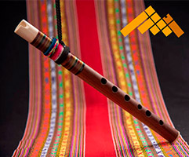
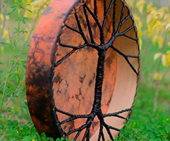
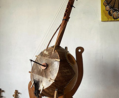
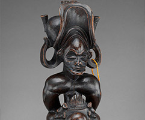

Lutería Orgánica & Acústica Ancestral
Explora la magia del sonido ancestral
Cada instrumento en Kaypacha es afinado a mano mediante técnicas milenarias. Flautas andinas, tambores chamánicos y vibraciones que conectan tu espíritu con la tierra.
COLECCIONES ESPECIALES
Familias de Instrumentos
Selecciona la familia instrumental que resuene con la vibración que buscas incorporar.
Flautas Andinas & Quenas
Quenas, Quenachos, Zampoñas y Tarkas labradas a mano en maderas nobles.
Explorar vientosTambores Chamánicos
Cultrunes, Frame Drums y Tambores de Marco con parches naturales.
Explorar percusiónCuerdas Ancestrales
Charangos, Ronrocos y Guitarras folclóricas por luthieres consagrados.
Explorar cuerdasCuencos & Didgeridoos
Cuencos de cuarzo y bronce tibetano, didgeridoos de eucalipto.
Explorar resonanciaCATÁLOGO PRINCIPAL
Instrumentos en Exposición

Quena Profesional de Jacarandá
Afinada en Sol Mayor (440Hz). Tono cálido y resuelta respuesta.

Tambor Chamánico de Venado
Marco de madera de sauce con parche de cuero ceremonial y baqueta.

Kamelé n'goni
Concebido para el entretenimiento y tocado libremente por los jóvenes para cantar sobre temas contemporáneos.

Flauta Africana
Instrumento aerófono profundamente arraigado en diversas culturas del continente